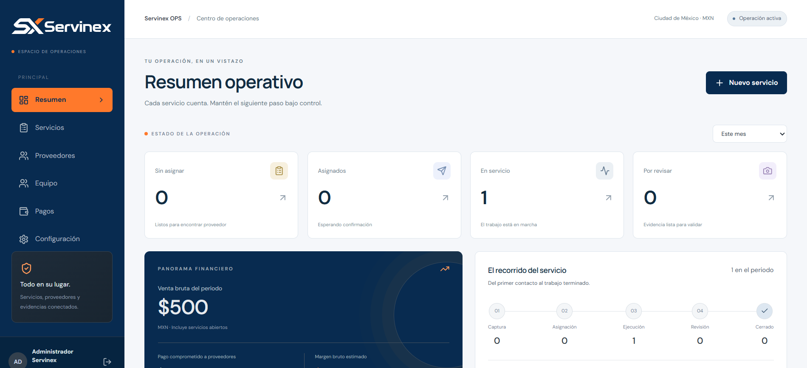

01
◌
Plataformas a medida
Portales, dashboards y sistemas internos que ordenan tu operación y hacen visibles las decisiones importantes.
Explorar ↗PLATAFORMAS · AUTOMATIZACIÓN · CONTROL
CONSULTORÍA DE SOFTWARE · MÉXICO / REMOTO
Somos una agencia de consultoría tecnológica. Diseñamos plataformas, automatizamos procesos y conectamos hardware industrial — PLC, sensores y control — para que tu operación avance con claridad.
01 / QUÉ HACEMOS
Somos una agencia de consultoría. Unimos plataformas, automatización y hardware industrial para resolver la operación completa, desde el tablero hasta el dato.
Portales, dashboards y sistemas internos que ordenan tu operación y hacen visibles las decisiones importantes.
Explorar ↗Diseñamos secuencias, monitoreo y control para que tus procesos funcionen con menos intervención manual.
Explorar ↗Integramos PLC, sensores, actuadores, HMI y tableros para conectar el mundo físico con tu operación digital.
Explorar ↗Conectamos máquinas, APIs y plataformas, y te acompañamos en la puesta en marcha y la mejora continua.
Explorar ↗02 / PROYECTOS SELECCIONADOS
Una selección de plataformas y automatizaciones que muestran cómo convertimos problemas operativos en sistemas que sí funcionan.

Abrir repositorio ↗La operación completa en una vista: servicios, proveedores, pagos y márgenes para decidir más rápido.
Un ecosistema de dispensado que conecta telemetría, wallets, pagos y verificación segura.
Portal de mantenimiento que mantiene a propietarios, técnicos y administradores en el mismo flujo.
Interacciones nativas, login OTP y datos financieros en una experiencia móvil más simple.
SOFTWARE +
CONTROL FÍSICO
ALINEAR
DISEÑAR
IMPLEMENTAR
EVOLUCIONAR
03 / CÓMO IMPLEMENTAMOS
Alineamos objetivos, construimos por etapas y acompañamos la operación hasta que el sistema queda listo para crecer.
Definimos alcance, indicadores y responsables antes de construir.
Traducimos el proceso a arquitectura, flujos, hardware y una hoja de ruta clara.
Construimos por etapas, probamos con usuarios y validamos en campo.
Medimos, documentamos y ajustamos para que el sistema siga creciendo.
04 / EMPECEMOS
Cuéntanos qué proceso quieres automatizar, qué plataforma necesitas o qué equipo industrial debemos conectar.
hola@nexora.dev ↗